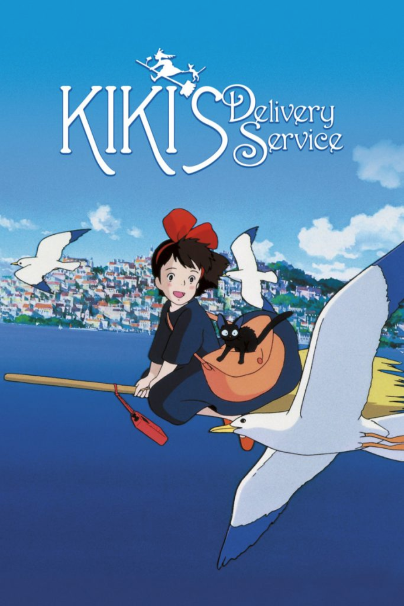

Director: Hayao Miyazaki
Released: 1989
Starring: Minami Takayama, Rei Sakuma, Kappei Yamaguchi
Adapted from the 1985 novel of the same name by Eiko Kadono, Kiki’s Delivery Service is the story of a young witch, Kiki, who moves to a new town and uses her flying ability to earn a living. According to Miyazaki, the movie portrays the gulf between independence and reliance in teenage Japanese girls.